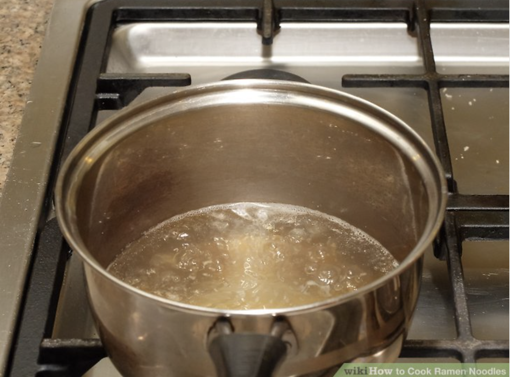

Step 1:Bring the water to a boil
Pour 2½ cups (590 milliliters) of water into a saucepan. Place the saucepan on the stove and bring the water to a boil over high heat
Step 2:Stir in the soup base
Tear open the seasoning packet that came with your ramen. Pour the contents into the boiling water and give it a stir.
Step 3:Allow the broth to cook for 1 minute
This ensures that the powder dissolves completely and that the water is hot enough for the next step.
Step 4:Add in the noodles
Gently press down on the noodles with a chopstick or a wooden spoon so that they sink into the water. You may have to hold them down for a little bit. Do not break the noodles in half or stir them. They will separate on their own.[4] You can also cook the noodles separately in a pot of boiling water.
Step 5: Cook the noodles for about 2 minutes
Once they start to break apart, pull them out of the broth using a pair of chopsticks or tongs. You can also pour the broth into a serving bowl through a strainer.
Step 6: Add toppings
Gently press down on the noodles with a chopstick or a wooden spoon so that they sink into the water. You may have to hold them down for a little bit. Do not break the noodles in half or stir them. They will separate on their own.[4] You can also cook the noodles separately in a pot of boiling water.